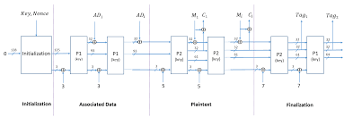

TinyJumbo lightwight algorithm
Introduction:
JAMBU is a lightweight authenticated encryption mode submitted to the CAESAR competition. JAMBU is the smallest block cipher authenticated encryption mode in the CAESAR competition, and it was selected to the Third Round of the competition. JAMBU has been presented at the NIST Lightweight Cryptography Workshop 2015.
TinyJAMBU mode, which is a small variant of the JAMBU mode, is based on a keyed permutation. TinyJambu is a lightweight cryptographic algorithm designed to provide security for low-power devices with limited resources such as Internet of Things (IoT) devices. It was proposed in 2018 by Guo et al. The state size of TinyJAMBU is only two thirds of that of JAMBU, the message block size of TinyJAMBU is half of that of JAMBU mode. When nonce is reused, TinyJAMBU provides better authentication security than JAMBU mode. The authentication security of TinyJAMBU mode is better than the Duplex mode when nonce is reused (for the same permutation size and message block size).
Specifications:
TinyJambu uses a lightweight 128-bit keyed permutation with no key schedule. The permutation is itself based on a 128-bit nonlinear feedback shift register. The keyed permutation supports three possible key sizes: 128 bits, 192 bits, 256 bits
The algorithm is a type of a stream cipher that generates a keystream to encrypt the plaintext. It uses a permutation-based design that combines a nonlinear feedback shift register (NFSR) with a linear feedback shift register (LFSR) to generate the keystream. The keystream is then combined with the plaintext using an XOR operation to generate the ciphertext.
The TinyJambu algorithm is designed to provide both confidentiality and integrity of the data. It uses a truncated version of the Keccak permutation as a basis for its design, which provides a high level of security with a small footprint. The algorithm has been optimized for various platforms including 8-bit microcontrollers and can operate efficiently on low-power devices.
The TinyJAMBU mode is shown in the image below. If the last block of the associated data (or plaintext) is not a full block , the length of the partial block (the
number of bytes) is xored to the state

TinyJAMBU Variants
There exists many variants to the TinyJambu algorithm that provide different levels of security and efficiency depending on the platform and application requirements. The choice of the variant to use depends on the specific use case and the available resources of the device or platform.
The TinyJambu family includes three main variants, namely TinyJambu-128, TinyJambu-192, and TinyJambu-256, which differ in their block sizes and key sizes. we present in the table below the differences, specifications, advantages, and disadvantages of each variant of TinyJambu.
| TinyJunbo variants |
Specifications |
Advantages |
disadvantages |
| TinyJambu-128 |
- Block size: 128 bits
- Key size: 128 bits
- Number of rounds: 40
- Security level: 128 bits
- Memory requirements: 16 words (64 bytes)
- CPU cycles per byte: 1.01
|
The small key size of 128 bits makes it suitable for applications with limited storage capacity.
TinyJambu-128 is very efficient and can be implemented on resource-constrained devices.
TinyJambu-128 provides a high level of security with a 128-bit security level. |
The small block size of 128 bits limits its applicability for some applications.
The number of rounds required for encryption and authentication is relatively high, which may impact performance. |
| TinyJambu-192 |
- Block size: 128 bits
- Key size: 192 bits
- Number of rounds: 56
- Security level: 192 bits
- Memory requirements: 24 words (96 bytes)
- CPU cycles per byte: 1.31
|
The larger key size of 192 bits provides a higher level of security than TinyJambu-128.
TinyJambu-192 is still very efficient and can be implemented on resource-constrained devices.
The security level of 192 bits provides a good balance between security and efficiency |
The larger key size of 192 bits may be more difficult to manage and store than the 128-bit key size of TinyJambu-128.
The increased number of rounds required for encryption and authentication may impact performance. |
| TinyJambu-256 |
- Block size: 128 bits
- Key size: 256 bits
- Number of rounds: 72
- Security level: 256 bits
- Memory requirements: 32 words (128 bytes)
- CPU cycles per byte: 1.55
|
The larger key size of 256 bits provides the highest level of security among the TinyJambu variants.
TinyJambu-256 is still efficient enough to be implemented on resource-constrained devices.
The security level of 256 bits is suitable for applications that require the highest level of security and confidentiality. |
The larger key size of 256 bits may be more difficult to manage and store than the 128-bit and 192-bit key sizes of the other TinyJambu variants.
The increased number of rounds required for encryption and authentication may impact performance more significantly than the other TinyJambu variants. |
Security advantages:
The TinyJambu algorithm provides security in several aspects such as confidentiality, integrity, authenticity, and resistance to attacks. Below are the security advantages of TinyJambu algorithm in each of these aspects:
- Confidentiality: Confidentiality is the ability to keep the data secret from unauthorized parties. TinyJambu algorithm provides confidentiality by encrypting the data using a key known only to the sender and the recipient. The encryption process scrambles the data in such a way that it is unreadable without the key. TinyJambu uses a combination of substitution-permutation network (SPN) and linear feedback shift registers (LFSRs) to provide confidentiality. SPN provides confusion by substituting plaintext bits with cipher bits, and LFSRs provide diffusion by shuffling the bits around in the ciphertext.
- Integrity: Integrity is the ability to ensure that data has not been altered or corrupted during transmission. TinyJambu algorithm provides integrity by using a message authentication code (MAC) that is computed using the same key used for encryption. The MAC is computed by processing the message and the key through a hash function, which produces a fixed-length output. The MAC is appended to the ciphertext, and the recipient can verify the integrity of the message by recomputing the MAC using the same key and comparing it with the MAC in the ciphertext.
- Authenticity: Authenticity is the ability to ensure that the message was sent by the claimed sender. TinyJambu algorithm provides authenticity by using a pre-shared key that is known only to the sender and the receiver. The key is used to generate a MAC, which is appended to the message to prove that the message was sent by the claimed sender. Only the receiver who possesses the same key can verify the MAC and authenticate the message.
- Resistance to attacks: TinyJambu algorithm is designed to be resistant to various types of attacks. It uses bit-slicing and constant-time implementations to prevent side-channel attacks, which exploit weaknesses in the physical implementation of the algorithm. It also uses SPN and LFSRs to provide confusion and diffusion, respectively, to prevent cryptanalysis attacks, which try to break the encryption by analyzing the algorithm. Additionally, TinyJambu supports a range of key sizes and block sizes, which allows for flexibility in choosing the appropriate level of security for a given use case.
Features :
The TinyJambu algorithm provides several features that makes it advantagous when used in constrained power devices, such as sensors, which have limited resources in terms of memory, processing power, and battery life. These features include:
- Lightweight: The TinyJambu algorithm is designed to be lightweight, meaning it requires minimal processing power and memory resources. This makes it an ideal choice for use in constrained power devices such as sensors, where energy consumption and memory usage are critical factors.
- Efficient: The TinyJambu algorithm is designed to be efficient in terms of computation and communication overhead. This means that it can encrypt and authenticate data quickly and with minimal overhead, making it an ideal choice for use cases where real-time communication is required.
- Secure: The TinyJambu algorithm provides a high level of security despite its lightweight and efficient design. It uses a combination of cryptographic techniques, such as substitution-permutation networks (SPN), to ensure the confidentiality, integrity, and authenticity of the data transmitted between the devices.
- Resistant to side-channel attacks: The TinyJambu algorithm is designed to be resistant to side-channel attacks, which are attacks that exploit weaknesses in the physical implementation of a cryptographic algorithm. The algorithm achieves this by using techniques such as bit-slicing and constant-time implementations, which make it difficult for attackers to extract sensitive information from the algorithm.
- Key sizes: The TinyJambu algorithm offers a range of key sizes, from 128 bits to 256 bits, allowing for flexibility in choosing the appropriate level of security for a given use case. This means that it can be used in applications where higher security requirements are necessary.
- Block sizes: The TinyJambu algorithm also offers a range of block sizes, from 64 bits to 128 bits, which allows for flexibility in choosing the appropriate block size for a given use case. This means that it can be used in applications where the size of the data being transmitted is a critical factor.
- Open source: The TinyJambu algorithm is open-source, which means that it can be freely used, modified, and distributed by anyone. This makes it an ideal choice for developers and researchers who want to experiment with and improve upon the algorithm.